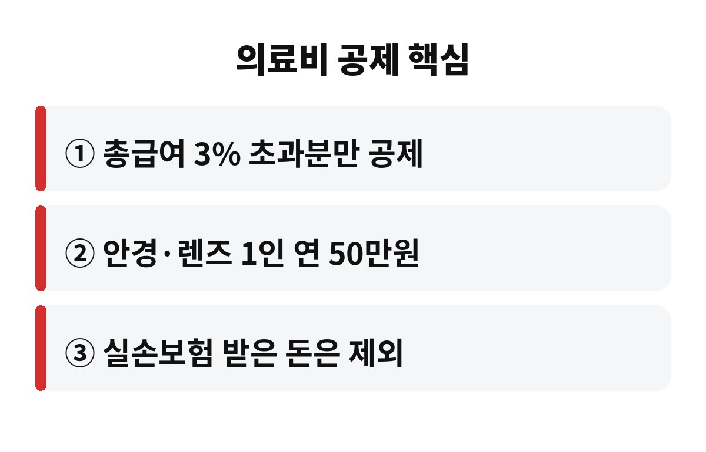

연말정산 의료비 공제는 쓴 병원비가 총급여의 3%를 넘는 부분부터 세금에서 돌려받는 제도입니다. 올해 병원이나 약국을 자주 다닌 직장인이라면, 내 영수증이 그 기준을 넘었는지 궁금하지 않으세요?
12월 말이 되면 다들 바빠서 챙기지 못하는데요, 10월 지금이 딱 점검하기 좋은 때입니다. 아직 두 달 가까이 남아서 부족한 부분을 채울 수도, 빠진 영수증을 찾을 수도 있거든요.
의료비 공제는 쓴 돈 전부를 깎아 주는 게 아닙니다. 내 총급여의 3%까지는 "그 정도는 누구나 쓰는 돈"으로 보고 빼 버리고, 그걸 넘긴 금액에 대해서만 세액공제를 해 줘요. 그래서 월급이 높을수록 문턱도 높아집니다.
예를 들어 병원비를 아무리 많이 썼어도 이 문턱을 못 넘으면 공제는 0원일 수 있어요. 반대로 문턱을 살짝만 넘겨도 그 초과분부터 계산이 시작됩니다. 그러니 연말정산 의료비 공제는 "많이 썼나"보다 "문턱을 넘었나"가 먼저입니다.

됩니다. 진료비, 입원비, 약국에서 산 의약품 비용은 기본이고, 시력 교정용 안경과 콘택트렌즈도 대상이에요. 다만 안경과 렌즈는 1인당 연 50만원까지만 인정되니 영수증을 모아 두세요. 산후조리원 비용도 일정 한도 안에서 공제됩니다.
반대로 안 되는 것도 있어요. 미용이나 성형 목적의 시술, 건강기능식품처럼 치료와 거리가 먼 지출은 보통 제외됩니다. 병원 영수증이라고 다 되는 게 아니라서 헷갈릴 땐 항목을 꼭 확인해야 해요.
여기가 제일 많이 놓치는 함정입니다. 병원비를 냈더라도 실손보험으로 돌려받은 금액은 공제 대상에서 빠집니다. 내 돈으로 낸 만큼만 인정하는 거죠. 간소화 서비스에서 보험금 수령액이 자동으로 반영되기도 하니 숫자가 생각보다 작아도 놀라지 마세요.
또 하나, 부양가족의 의료비도 합산할 수 있어요. 부모님 병원비를 내가 대신 냈다면 요건이 맞는지 확인해 보세요. 가족 지출을 한 사람에게 몰아 문턱을 넘기는 게 요령입니다.
첫째, 국세청 연말정산 간소화 서비스가 열리면 의료비 내역을 먼저 조회하세요. 둘째, 간소화 자료에 안 잡히는 동네 병원이나 안경점 영수증은 따로 챙겨 두세요. 셋째, 문턱에 거의 다 왔다면 미뤄 둔 치료를 올해 안에 하는 것도 방법입니다.
물론 세금 때문에 없는 병을 만들 순 없죠. 어디까지나 필요한 치료라면 시기를 조율해 보라는 뜻이에요. 올해 병원비는 문턱을 넘길 것 같으세요, 아니면 아슬아슬할 것 같으세요? 댓글로 알려 주시고, 공감과 구독도 부탁드려요.
※ 본 글은 일반 정보이며 투자 권유가 아닙니다. 세부 요건은 국세청 안내를 확인하세요.